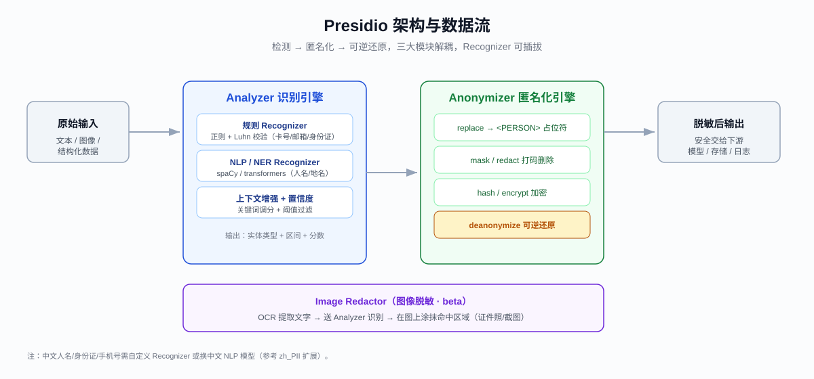
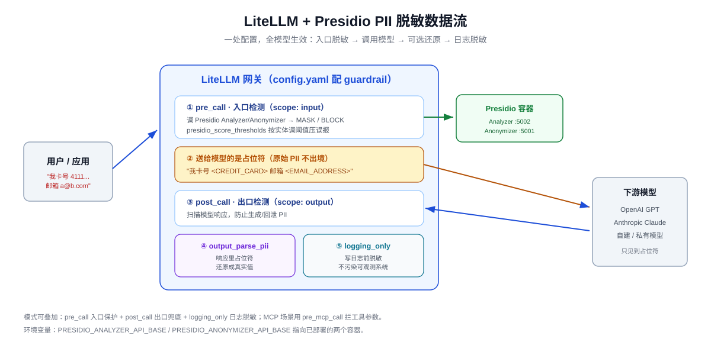

给大模型加一道隐私闸门：Presidio + LiteLLM 实战 PII 脱敏指南（2026）
2023 年，三星工程师把内部源码和会议记录直接粘进 ChatGPT，导致敏感数据外泄，公司随后全面封禁生成式 AI。同年意大利一度全国禁用 ChatGPT，加拿大对 OpenAI 展开调查——理由都指向同一件事：用户的个人信息在毫无过滤的情况下被送进了第三方大模型。
三年过去，这个问题非但没有消失，反而随着 Agent、RAG、MCP 的普及被放大。你的应用每天可能把成千上万条含姓名、手机号、身份证号、银行卡号的对话，原封不动地转发给 OpenAI、Anthropic 或某个云端 API。一旦被记录、被训练、被日志泄露，等待你的可能是 GDPR 的天价罚单，或是《个人信息保护法》(PIPL) 项下的合规追责。
解决思路其实很朴素：在数据离开你的边界之前，加一道隐私闸门——自动识别其中的 PII（个人可识别信息），脱敏或拦截，再放行给模型。本文就聚焦这道闸门：先讲清 PII 检测的技术路线，再深度解析微软开源的 Presidio，横向对比几家主流平台，最后手把手教你在 LiteLLM 网关里把它跑起来。
一、为什么必须给大模型加这道闸门
先厘清一个概念。PII（Personally Identifiable Information，个人可识别信息）指任何能单独或结合其他信息识别到具体自然人的数据：姓名、手机号、邮箱、身份证号、银行卡号、地址、IP、生物特征等。在医疗场景还有 PHI（受保护健康信息），在支付场景有 PCI（持卡人数据）。
把 PII 直接喂给大模型，风险来自三个层面：
- 传输与存储：调用第三方 API 时，数据离开了你的可控边界。对方是否记录、是否用于训练、日志留存多久，你往往无法完全掌控。
- 可观测性副作用：为了 debug，团队通常把完整 prompt/response 打进 Langfuse、Arize、ELK。这些日志系统一旦权限失控，就是一个巨大的 PII 泄露面。
- 模型输出反向泄露：模型可能在回答里复述、拼接甚至"脑补"出用户的敏感信息，再传回给其他用户。
合规压力是实打实的。GDPR 对个人数据处理有严格约束，违规最高可罚全球年营收的 4%；HIPAA 管美国医疗数据；CCPA 管加州消费者隐私。在国内，2021 年施行的 PIPL、《数据安全法》(DSL)，以及 2026 年 1 月起大幅修订生效的《网络安全法》(CSL) 共同构成三支柱框架，叠加等保 2.0 与数据出境要求，任何涉及个人信息的 AI 应用都绕不开。
值得注意的是，PIPL 对"匿名化"和"去标识化"有明确区分：无法识别且不可复原的匿名化数据不在监管范围内，而仅做了去标识化（理论上仍可重新关联）的数据依然在监管范围内。这个区别直接决定了你该选"不可逆脱敏"还是"可逆脱敏 + 金库"的技术方案，后面会展开。
分层防御是业界共识：越早拦截，成本越低；越晚拦截，上下文越全，判断越准。所以理想的做法不是二选一，而是入口、网关、出口多层叠加。这道"隐私闸门"最典型的落点，就是 LLM 网关。
二、PII 检测的三种技术路线
在选工具之前，先理解底层三种识别机制，因为几乎所有产品都是它们的组合。
1. 规则/模式匹配（Regex + Checksum）
用正则表达式匹配有固定格式的实体：邮箱、信用卡号（还能用 Luhn 校验位验证）、身份证号、IP。优点是零成本、可解释、延迟极低；缺点是对无固定格式的实体（尤其是人名、地址）无能为力，且误报率取决于规则质量。
2. NLP 命名实体识别（NER）
用 spaCy、transformers 这类模型做实体识别，能抓住人名、地名、机构名这些"软实体"。优点是泛化能力强；缺点是要加载模型、有推理延迟，且对中文等语言的识别质量强依赖模型选择。
3. 上下文增强（Context Enhancement）
结合关键词上下文提升置信度。比如一串数字本身可能是订单号也可能是卡号，但如果前面出现"信用卡""card number"，置信度就该提高。这层通常作为前两者的加权修正。
成熟工具的做法是"规则打底 + NER 补软实体 + 上下文调分 + 置信度阈值过滤"。理解了这套机制，你就能看懂 Presidio 的设计——它恰好把这三层做成了可插拔的 Recognizer。
三、Presidio 深度解析
一个"要塞"的故事：它从哪来，为什么现在火了
在动手看配置之前，我想先讲个故事——因为这个框架的身世，恰恰解释了它今天为什么站在聚光灯下。
名字的由来。 Presidio 源自拉丁语 praesidium，本意是"保护、卫戍"。微软工程师起这个名字，用意很直白：让它像一座要塞一样，把敏感信息挡在你应用的边界之内。
微软种下的种子（2018-2019）。 2018 年 5 月，微软团队在 GitHub 上建了这个仓库，最初定位是"面向文本与图像的、上下文感知、可插拔、可定制的数据保护与 PII 匿名化服务"。一年后，也就是 2019 年，它以最宽松的 MIT 协议正式开源——免费商用、随意修改、不需要公开你的代码。微软给它的使命只有一句话：让去标识化（de-identification）技术民主化。在那个年代，"脱敏"还是大型银行、医疗机构才玩得起的昂贵企业方案，Presidio 想做的，是把这套能力装进一个普通开发者也能用的 Python 包和 REST API，把它拉下神坛、交给所有人。
脱胎换骨的 V2（2021 年 3 月）。 上线两年后，Presidio 迎来一次大重构：底层通信从 gRPC 换成 HTTP JSON API，调试变得前所未有地友好；Anonymizer 重写成纯 Python，pip install presidio-anonymizer 即装即用；Analyzer 砍掉了沉重的"模板 + 外部识别规则库"；图像脱敏（Image Redactor）以 beta 形态首次亮相；格式保留加密也换成了更通用的 AES。正是这次重构，把它从"企业重武器"打磨成了今天人人上手的模样。
社区化的转身（2026 年）。 而真正的转折发生在今年：微软宣布把 Presidio 交棒给一个独立的社区治理组织——Data Privacy Stack，仓库正式搬到了 github.com/data-privacy-stack/presidio（原 microsoft/presidio 地址会自动跳转过去）。微软公开表态支持这次交接，目标是把项目变成厂商中立（vendor-neutral）的社区资产，而不是某家公司的附属品。伴随迁移，Docker 镜像也从微软容器仓库（mcr.microsoft.com/presidio-*）迁到了 GitHub 的 ghcr.io/data-privacy-stack/presidio-*。
划重点：不少人以为
data-privacy-stack/presidio是微软官方仓库的"镜像或 fork"——其实恰恰相反，它才是现在的官方仓库本体。如果你在旧链接看到"镜像/跳转"的说法，那只是迁移过渡期的临时状态。后面凡是涉及镜像拉取、文档地址，请认准 Data Privacy Stack 这个新组织。
为什么一个快八岁的老项目突然又火了？ 到现在，仓库累计超过 1 万 star、1200+ fork，依然免费。答案其实不复杂：LLM 爆发，让"把敏感数据发给外部模型"这件事，从银行家的烦恼变成了每个开发者的日常。工具还是那个工具，但当它恰好站在一个大众性问题的正中央，它就被重新看见了。
说回正题。Presidio 的定位，一句话概括：跨文本、图像、结构化数据，做检测、编辑、掩码、匿名化，支持 NLP、模式匹配和可定制流水线。核心卖点依然是三板斧——免费、可本地/容器化部署、数据不出境，这正好切中合规痛点。下面拆开看它由什么组成。
3.1 三大核心模块
Presidio 不是一块铁板，而是三个各司其职的模块组成的组合拳。
- Presidio Analyzer：先认出"敌人"。它是侦察兵，负责在文本里揪出敏感信息。它身上挂着一串"探员"（Recognizer），每个探员盯一类实体：盯信用卡号的、盯人名的、盯地名的……它们有的靠正则、有的靠校验位、有的靠 NLP 命名实体识别，各显神通之后，上报"在哪一段、是什么类型、有多确定"。底层可以选 spaCy、Stanza 或 transformers 做语义识别引擎。
- Presidio Anonymizer：再动手"化妆"。拿到 Analyzer 给的"坐标"后，它对敏感片段做变换：替换成占位符（replace）、打码（mask）、直接删除（redact）、哈希（hash）、加密（encrypt）。其中加密这条线特别关键——它支持反匿名化（deanonymize），拿着密钥就能把脱敏结果还原回去。这正是前面聊 PIPL 时提到的"可逆脱敏"的技术底座。
- Presidio Image Redactor：连图片也不放过。证件照、聊天截图里同样藏着敏感文字。它走 OCR 提取文字 → 送去 Analyzer → 再把命中的区域直接在像素层面涂抹掉。这是 2021 年 V2 引入的 beta 能力，处理常见图片场景够用，但别指望它完美。
3.2 开箱能用，真正的价值在"可插拔"
Presidio 开箱即可识别信用卡号、姓名、地点、社保号（SSN）、比特币钱包、美国电话、金融数据等常见实体。说实话，这套开箱能力只是"及格线"，它真正的价值在三个扩展口：
- 自定义 Recognizer：想识别身份证号、统一社会信用代码、内部工号？写一个
PatternRecognizer（正则 + 上下文关键词）注册进去即可，或者继承EntityRecognizer接入自己的模型。 - Ad-hoc Recognizer：连代码都不用改，运行时扔一个 JSON 就能临时注入识别规则——后文 LiteLLM 实战里你会再次见到它。
- 置信度阈值：每个检测都带分数，你可以按实体类型分别设门槛，用它来平衡"误杀"和"漏网"。
3.3 泼盆冷水：中文不是它的主场
这一点必须提前讲清楚，免得你踩坑。Presidio 的开箱模型和内置实体，基本是为英文和西方格式（美国电话、SSN、地址）设计的。中文人名、身份证号、手机号，它默认并不认识——你需要二选一：
- 自己补自定义 Recognizer（写正则 + 上下文词）；
- 或者换一个中文 NLP 模型挂进 Analyzer。
社区里有个项目 ltm920716/zh_PII，就是专门给 Presidio 做中文扩展的，可以拿来当起点。一句话总结：Presidio 不是"拿来即用的中文合规产品"，而是一套需要花精力调校的框架。选型时，务必把这部分工作量算进预算。
下面这张图把 Presidio 的整体数据流画了出来，方便你在心里安放它的位置：

3.4 值不值得用：优缺点一次说清
优点：免费开源（MIT）、数据不出境、模块解耦想换就换、扩展性强、支持可逆匿名化、还能处理图像。
缺点：中文要自己调校、NER 推理有延迟还多一份模型部署成本、准确率得自己打磨、图像脱敏仍偏 beta。而且官方自己明确提醒过：自动检测抓不全所有敏感信息，别把宝全押在它一个身上，要和注入检测、内容审计一起组成纵深防御。
四、其他相关平台横向对比
Presidio 之外，市场上还有几类值得了解的方案。
4.1 云厂商托管 API
- Google Cloud DLP：提供发现与检查 API 及模板，可扫描文件、数据存储和数据流中的 PII，实体类型覆盖广，开箱即用。
- AWS Comprehend PII：托管 NLP 服务，内置英语/西语 PII 检测。AWS 的官方最佳实践是分层防御：Comprehend 早拦、Bedrock Guardrails 在推理链拦、Macie 做数据存储扫描，早期拦截成本最低。
- Azure AI Language PII：支持文本与对话（转录稿、聊天）的 PII 识别与编辑，多语言。
云 API 胜在省心、准确率有保障，但数据要出你的边界，且按量计费——对国内数据出境合规是硬伤。
4.2 商业 SaaS / DLP 平台
- Nightfall AI：主打 GenAI 检测器，宣称相比传统云 DLP 有约 2 倍精度、约 4 倍更少误报，重点解决安全团队的告警疲劳。
- Private AI（PrivateGPT Headless）：定位"本地过滤器"，在 API 调用离开网络前检测并剥离 50+ 种 PII，响应时再还原，主打数据不外泄。
- Skyflow：数据隐私金库(Data Privacy Vault)路线，把敏感数据集中托管，提供去标识化/再标识化、格式保留 token、vault token 等，适合需要"用得了又不暴露"的合规工作流。
- 其他还有 Strac、pii-tools 等偏数据发现与治理的产品。
4.3 中文/本土合规
jnMetaCode/shellward：定位"为中国监管而生"的 AI 应用合规网关，覆盖网安法、PIPL、等保 2.0、数据出境、AI 标识，内置中文威胁检测和中文 PII，零依赖，可做运行时防护拦截注入与数据外泄。tabularisai/eu-pii-safeguard：覆盖 26 种欧盟官方语言的多语言 PII 检测模型，面向 GDPR。
4.4 选型速查
| 方案 | 部署 | 数据边界 | 中文 | 成本 | 适用 |
|---|---|---|---|---|---|
| Presidio | 自托管/容器 | 不出境 | 需调校 | 免费 | 数据敏感、要可控 |
| Google DLP | 云 API | 出境 | 较好 | 按量 | 已在 GCP、要省心 |
| AWS Comprehend | 云 API | 出境 | 一般 | 按量 | AWS 生态、分层防御 |
| Nightfall | SaaS | 出境 | 一般 | 订阅 | 重误报管理、安全团队 |
| Private AI | 自托管/SaaS | 可不出境 | 较好 | 订阅 | 本地过滤、多 PII 类型 |
| Skyflow | SaaS/私有 | 金库托管 | 一般 | 订阅 | 需可逆、金库化治理 |
| shellward | 自托管 | 不出境 | 原生 | 免费 | 国内监管、中文优先 |
一句话决策：数据不能出境、预算有限、有工程能力调校 → Presidio；要开箱即用且能接受出境 → 云 API 或 SaaS；国内监管强合规 → 优先看本土网关。
五、在 LiteLLM 中实战集成 Presidio
理解了工具，接下来是最关键的落地。LiteLLM 作为统一 AI 网关，原生把 Presidio 做成了一个 guardrail。好处是一处配置、所有下游模型生效——不管你后面接的是 GPT、Claude 还是自建模型，PII 都在网关这层被统一处理。
整体链路如下图：

5.1 部署 Presidio 容器
LiteLLM 的 Presidio guardrail 需要你自行部署两个服务：Presidio Analyzer 和 Presidio Anonymizer 容器。启动后，把地址告诉 LiteLLM：
export PRESIDIO_ANALYZER_API_BASE="http://localhost:5002"
export PRESIDIO_ANONYMIZER_API_BASE="http://localhost:5001"
5.2 最小可用配置
在 LiteLLM 的 config.yaml 中定义 guardrail。下面这份把信用卡和邮箱做掩码：
model_list:
- model_name: gpt-3.5-turbo
litellm_params:
model: openai/gpt-3.5-turbo
api_key: os.environ/OPENAI_API_KEY
guardrails:
- guardrail_name: "presidio-mask-guard"
litellm_params:
guardrail: presidio
mode: "pre_call" # LLM 调用前、对输入做处理
pii_entities_config:
CREDIT_CARD: "MASK" # 掩码信用卡号
EMAIL_ADDRESS: "MASK" # 掩码邮箱
请求时带上 guardrails 字段即可触发：
curl http://localhost:4000/chat/completions \
-H "Content-Type: application/json" \
-H "Authorization: Bearer sk-1234" \
-d '{
"model": "gpt-3.5-turbo",
"messages": [
{"role": "user", "content": "My credit card is 4111-1111-1111-1111 and my email is test@example.com"}
],
"guardrails": ["presidio-mask-guard"]
}'
送到模型的内容会变成 <CREDIT_CARD> 和 <EMAIL_ADDRESS> 占位符，原始卡号根本不会离开网关。
5.3 MASK 还是 BLOCK
每个实体类型可以指定两种动作：
MASK：替换为占位符（如<PERSON>），请求继续。BLOCK：一旦检测到该实体，直接拦截整个请求，抛出BlockedPiiEntityError。
典型策略是"能脱敏的脱敏、绝不能出现的拦截"。比如医疗执照号直接 BLOCK，普通姓名、电话 MASK：
guardrails:
- guardrail_name: "presidio-mixed-guard"
litellm_params:
guardrail: presidio
mode: "pre_call"
pii_entities_config:
MEDICAL_LICENSE: "BLOCK" # 出现即拦截
CREDIT_CARD: "MASK"
PHONE_NUMBER: "MASK"
PERSON: "MASK"
5.4 扫描方向：input / output / both
presidio_filter_scope 控制在哪一侧检测：
input：只扫用户 → 模型的内容，防止 PII 离开你的边界。output：只扫模型 → 用户的内容，防止模型生成或回泄 PII。both（默认）：双向端到端防护。
guardrails:
- guardrail_name: "presidio-both-guard"
litellm_params:
guardrail: presidio
mode: "post_call" # post_call 才能同时处理输入与输出
presidio_filter_scope: both
pii_entities_config:
PERSON: "MASK"
EMAIL_ADDRESS: "MASK"
注意一个易踩的坑：output_parse_pii 这个开关只负责在模型调用后把占位符还原成原文，并不会对输出做 Presidio 检测。如果你想主动扫描并掩码模型响应，要用 presidio_filter_scope: output（或 both）。
5.5 置信度阈值调准确率
presidio_score_thresholds 让你按实体设最低置信度，低于阈值的检测被丢弃——这是压制误报的主要旋钮：
guardrails:
- guardrail_name: "presidio-tuned-guard"
litellm_params:
guardrail: presidio
mode: "pre_call"
presidio_score_thresholds:
ALL: 0.7 # 全局默认阈值
CREDIT_CARD: 0.8 # 卡号要求更高置信度
EMAIL_ADDRESS: 0.6 # 邮箱格式明确，可放低
pii_entities_config:
CREDIT_CARD: "MASK"
EMAIL_ADDRESS: "MASK"
规则：不配 presidio_score_thresholds 就保留所有检测；配了 ALL 全局生效；配了具体实体则该实体覆盖 ALL。
5.6 可逆脱敏（output_parse_pii）
有些场景你希望模型回答里能带回真实值，让用户读起来自然。开启 output_parse_pii 后，LiteLLM 会在响应里把占位符还原：
guardrails:
- guardrail_name: "presidio-reversible-guard"
litellm_params:
guardrail: presidio
mode: "pre_call"
output_parse_pii: True
流转过程是这样的：
- 用户输入：
hello world, my name is Jane Doe. My number is: 034453334 - 送给 LLM：
hello world, my name is [PERSON]. My number is: [PHONE_NUMBER] - LLM 返回：
Hey [PERSON], nice to meet you! - 还给用户：
Hey Jane Doe, nice to meet you!
模型全程没见过真实值，用户体验却完整。对照前面 PIPL 的定义，这属于"可复原的去标识化"，数据仍在监管范围内，需配合访问控制与审计——但至少 PII 没有出境到第三方模型。
5.7 多语言
Presidio API 支持传语言参数。默认语言用 presidio_language 配（en/es/de 等），也可以在单次请求里用 guardrail_config.language 覆盖。优先级：单请求 > 配置文件 > 默认 en。
guardrails:
- guardrail_name: "presidio-german"
litellm_params:
guardrail: presidio
mode: "pre_call"
presidio_language: "de" # 默认用德语识别
pii_entities_config:
PERSON: "MASK"
CREDIT_CARD: "MASK"
5.8 Ad-hoc Recognizer 与 MCP
- Ad-hoc Recognizer：想临时加一条识别规则（比如瑞士 AHV 号），不用改 Presidio 代码，把一个 JSON 传给
presidio_ad_hoc_recognizers即可，LiteLLM 会转发到 Presidio 的/analyze。 - MCP 场景：如果你用 MCP 让 Agent 调工具，可以用
mode: "pre_mcp_call"在工具调用前做 PII 掩码/拦截，防止敏感信息通过工具参数外泄。
guardrails:
- guardrail_name: "presidio-mcp-guard"
litellm_params:
guardrail: presidio
mode: "pre_mcp_call"
presidio_filter_scope: both
pii_entities_config:
CREDIT_CARD: "MASK"
EMAIL_ADDRESS: "BLOCK"
PHONE_NUMBER: "MASK"
default_on: true
5.9 可观测：logging_only 模式
还有一个务实的模式 logging_only：不改动真实的 API 请求/响应，只在写入日志前做 PII 掩码。这解决了前面提到的"日志系统成 PII 泄露面"的问题——你既保留了可观测能力，又不会把明文 PII 落进 Langfuse。所有 guardrail 执行都能在 LiteLLM Logs、Langfuse、Arize Phoenix 里追踪到，包括命中的实体类型、置信度和耗时。
六、生产落地的几个要点
把上面的配置跑通只是开始，生产环境还要注意：
- 模式选择：入口保护用
pre_call，输出兜底用post_call+outputscope，只做日志脱敏用logging_only。三者可以配多个 guardrail 叠加。 - 延迟预算：
during_call与 LLM 调用并行执行，可减少感知延迟；纯pre_call会串行增加首字延迟。NER 模型冷启动慢，容器要预热。 - 准确率闭环：先用宽松阈值观察命中，再逐实体收紧
presidio_score_thresholds，用 LiteLLM 的 tracing 复盘误报漏报。 - 中文务必自测：默认识别对中文姓名、身份证、手机号覆盖有限，上线前用真实中文样本压测，缺什么补自定义 Recognizer。
- 别把 Presidio 当唯一防线：官方明确说了自动检测抓不全。PII 脱敏应作为整体 Guardrails 体系的一层，与注入检测、内容审计一起构成纵深防御。
- 可逆 vs 不可逆：涉及数据出境合规时，优先不可逆脱敏；确需还原体验时用
output_parse_pii，但要配套访问控制与审计留痕。
小结
给大模型加隐私闸门，本质是在数据离开可控边界前完成 PII 的识别与处理。技术路线上，规则、NER、上下文三者组合；工具选型上，数据不出境选自托管的 Presidio，要省心可上云 API 或商业 SaaS，国内强合规看本土网关。而 LiteLLM 把 Presidio 变成一个网关级 guardrail，用一份 config.yaml 就能实现「一处配置、全模型生效」的 PII 脱敏，配合 MASK/BLOCK、双向 scope、置信度阈值、可逆还原、logging_only 等能力，足以覆盖从入口到出口、从对话到工具调用、从生产到日志的完整链路。
隐私合规不是上线后的补丁，而是架构里的一层。越早把这道闸门装上，代价越小。
免责声明
本文所述工具能力、配置参数与合规要点均基于公开文档整理，随版本更新可能变化，请以官方最新文档为准。文中涉及的法律法规解读仅供技术选型参考，不构成法律意见，具体合规义务请咨询专业法律顾问。自动化 PII 检测无法保证识别全部敏感信息，请勿将其作为唯一防护手段。
参考来源
- data-privacy-stack/presidio 官方仓库 - GitHub
- microsoft/presidio（迁移前地址，自动跳转） - GitHub
- The Presidio Project Joins Data Privacy Stack - 社区化迁移公告
- Presidio Project Transition - 官方迁移说明
- Presidio V2 重构说明（gRPC → HTTP 等） - GitHub
- Presidio Anonymizer 文档 - GitHub
- Developing Recognizers - Presidio Docs
- PII, PHI Masking - Presidio | LiteLLM Docs
- Presidio PII Masking with LiteLLM - Tutorial
- MCP Guardrails - LiteLLM Docs
- ltm920716/zh_PII 中文场景扩展 - GitHub
- jnMetaCode/shellward AI 应用合规网关 - GitHub
- Skyflow for GenAI
- Private AI vs Skyflow for GenAI 对比
- PII Detection and Redaction Patterns for Generative AI on AWS
- 中国数据隐私法：PIPL、CSL 与 DSL 合规指南（2026）
- China's PIPL Explained with Real-World Scenarios
相关阅读
- LiteLLM AI 网关深度评测：统一多模型调用的最佳实践
- 从零搭建 LLM 安全护栏：开源工具选型 + 生产架构实战
- Langfuse LLM/Agent 可观测性实战指南
- MCP vs A2A：AI Agent 协议深度对比
- 企业级 AI Agent 部署指南
推荐搭配装备
善其事，利其器。以下硬件能最大化你的AI体验👇
🔗 通过以上链接购买可支持本站持续运营 🙏